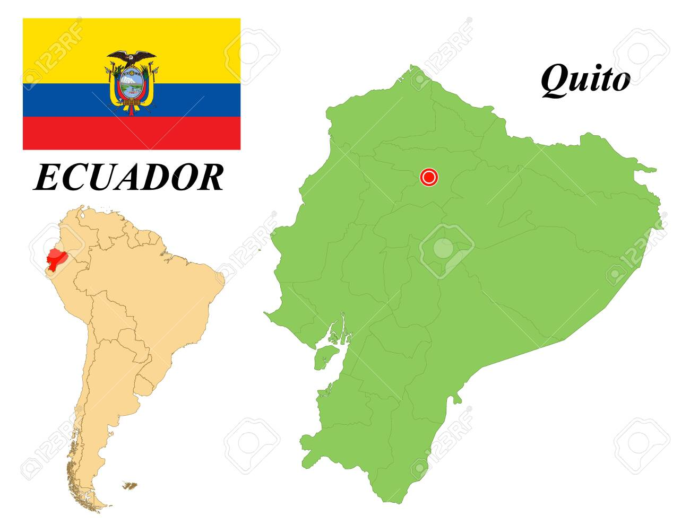
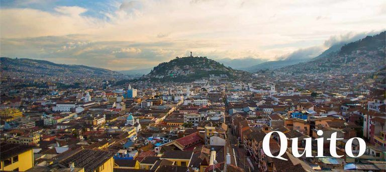

Se remonta a los primeros habitantes que poblaron las regiones orientales del Distrito alrededor del año 1030 a.C., en el sector del Inca. Si bien existen restos arqueológicos que demuestran que la ciudad estuvo poblada durante siglos, se desconoce el momento exacto de su fundación. Más adelante, con la llegada de los Incas, Quito se convertiría en una ciudad importante de la zona norte del Tahuantinsuyo y tras la destrucción de Tomebamba se transformó en la segunda capital de imperio Inca. El 6 de diciembre de 1534 la ciudad sería conquistada por los españoles.Durante la colonia sería el centro político del actual Ecuador, la segunda ciudad en ser fundada en territorio ecuatoriano y desde aquella época la capital y principal urbe de la nación.
Quito ha sido históricamente la ciudad más visitada del Ecuador, debido a su riqueza cultural, siendo considerada "Relicario del Arte en América", además de ser la primera ciudad en ser declarada por la UNESCO "Patrimonio Cultural de la Humanidad". Además, la ciudad está rodeada por los volcanes Pichincha, Antisana, Cotopaxi, y Cayambe que conforman el contorno andino. La urbe experimentó un sostenido crecimiento en sus estadísticas turísticas, hasta la pandemia de COVID-19. En el 2019, la ciudad recibió a más de 680.000 turistas internacionales,que provenían principalmente de Estados Unidos, Colombia y España. El turismo generó aproximadamente 520 millones de dólares a la economía quiteña, aportando con el 3% del PIB de la ciudad. Así también creció el sector de la hotelería, llegando en el 2019 a más de 700 establecimientos de alojamiento turístico en todo el Distrito Metropolitano de Quito: dichos establecimientos ofertaban más de 30.000 plazas de alojamiento, distribuidas en 14.569 habitaciones. Es así como Quito se ha convertido en un potencial destino turístico en Latinoamérica, demostrándose esto en la obtención por siete veces consecutivas del premio "Destino Líder de Sudamérica" (entre 2013 y 2019) en los prestigiados World Travel Awards, considerados los 'Premios Óscar del turismo'.Además de la ciudad, varias empresas turísticas locales han sido condecoradas en otras categorías de los World Travel Awards y otros certámenes, como los Premios Travvy.
